Шаг 1: подготавливаем яйца.
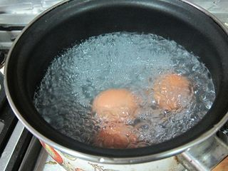
Первым делом необходимо подготовить все ингредиенты, так как салат у нас идет слоями. Поэтому для начала отвариваем яйца в кастрюле вкрутую. И после ставим их под струю холодной воды, чтобы с них было легко снять скорлупу.
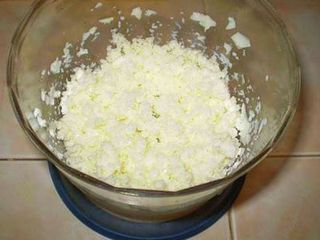
Теперь с помощью блендера или мелкой терки вначале измельчаем отдельно белки вареных яиц.
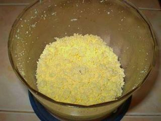
После - измельчаем желтки. Вкладываем компоненты на тарелки.
Шаг 2: подготавливаем плавленые сырки.
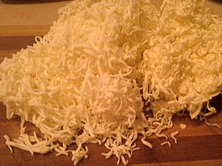
С помощью мелкой терки измельчаем плавленые сырки. Это можно делать прямо над тарелкой, чтобы потом не перекладывать ингредиент салата.
Шаг 3: подготавливаем лук.
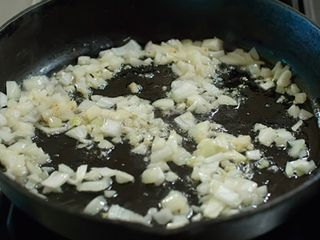
А вот теперь нам понадобится плита и сковорода. Первым делом измельчаем очищенный от шелухи лук на разделочной доске с помощью ножа. Нарезаем ингредиент на небольшие квадратики и выкладываем в сковороду с растительным маслом. Постоянно помешивая деревянной лопаткой, поджариваем измельченный овощ до золотистого цвета. И теперь на той же разделочной доске размещаем бумажное полотенце и перекладываем на него жареный лук для того, чтобы с него ушел лишнее масло. После перекладываем компонент в тарелку.
Шаг 4: подготавливаем рыбные консервы.
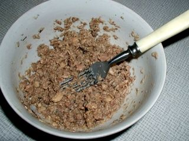
Консервным ножом открываем банку с рыбой. В этом салате отлично по вкусовым качествам подходит такая рыбка, как тунец или горбуша. Единственный важный момент – приобретайте проверенные торговые марки и проверяйте дату выпуска, особенно в летнее время. Итак, содержимое банки столовой ложкой выкладываем в тарелку и разминаем вилкой, добавив несколько капель очищенной воды. Жидкости нужно совсем немного, но добавить ее необходимо, так как консервированное мясо рыбы внутри суховато.
Шаг 5: подготавливаем чернослив.
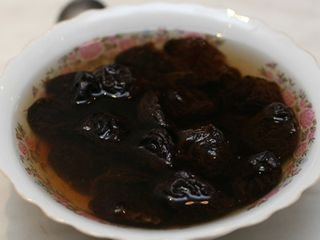
В глубокую миску или тарелку выкладываем чернослив и заливаем его горячей водой, чтобы он разбух.
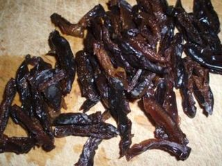
И после ножом достаем косточку и нарезаем его вдоль плода на полоски. Перекладываем измельченный компонент в ту же емкость, в которой он распаривался.
Шаг 6: подготавливаем орехи.
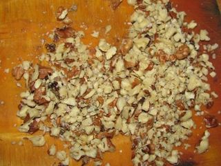
Что касается орехов! Вообще можно выбирать этот компонент по вашему усмотрению. Я люблю грецкие орехи. Но можно также добавлять в салат и арахис, и кешью, и фундук. А можно сделать и ореховый микс. Получается в любом случае очень вкусно! Итак, измельчаем орехи или с помощью блендера, но только на 1-2 режимах, так как кусочки не должны быть, как крошка. И есть еще и второй способ – выкладываем ореховый ингредиент на разделочную доску и измельчаем их, придавливая рукояткой ножа. Все кусочки перекладываем в тарелку и переходим к следующему шагу.
Шаг 7: подготавливаем огурцы.
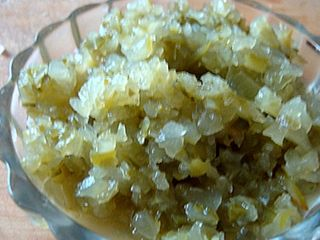
Огурцы нарезаем на кусочки ножом на разделочной доске. И теперь или измельчаем их с помощью блендера на 2-3 режимах, или трем их на крупной терке, а потом еще измельчаем ножом на разделочной доске. Мне, конечно, нравится больше первый способ, так как тогда не разбрызгивается сок во все стороны, да и экономия времени. Потом перекладываем измельченный компонент в тарелку.
Шаг 8: подготавливаем яблоко.
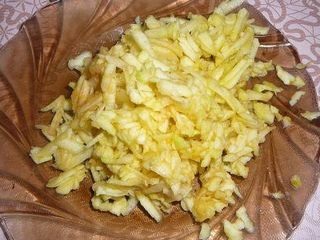
Яблоко промываем под проточной водой и разрезаем ножом на разделочной доске на четыре кусочка. Удаляем с ингредиента сердцевину и хвостик. И теперь с помощью крупной терки измельчаем каждый кусочек яблока. Перекладываем его в тарелку. Кому не нравится яблочная кожура, можно ее срезать. Так ингредиент даже придаст больше нежности салату.
Шаг 9: подготавливаем маслины.
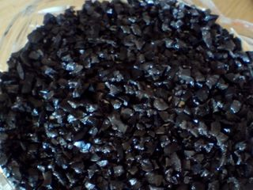
Мы практически закончили подготавливать все ингредиенты. Теперь еще немного усилий и наш салатный шедевр будет готов! Итак, открываем банку с маслинами, сливаем из нее жидкость и выкладываем ингредиент в блендер. Измельчаем все на 2 или 3 режиме. Маслины должны получиться, как мелкая стружка, но и не как кашица! Второй способ мы все знаем, если под рукой не нашлось такого прибора. Измельчаем каждую маслину на крупной терке, а потом еще рубим ножом на разделочной доске. Перекладываем все в тарелку. Когда будем формировать салат, необходимо часть ингредиента оставить для плавников.
Шаг 10: смешиваем ингредиенты.
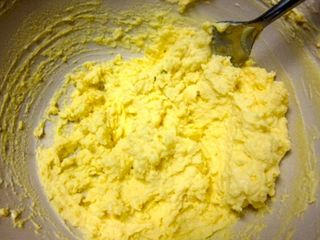
Теперь с помощью чесночницы измельчаем очищенные от шелухи зубчики чеснока и добавляем их к яичным желткам. Туда же по вкусу добавляем майонез. Масса не должна быть жидкой. Поэтому майонез добавляем по чуть-чуть, постоянно перемешивая ложкой ингредиенты до образования однородной массы.